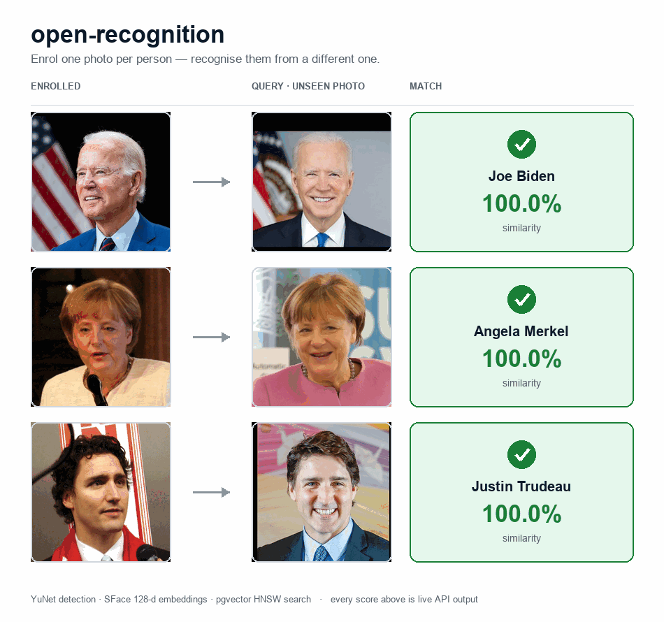

open-recognition¶
A free, self-hosted, boto3-compatible drop-in for the AWS Rekognition Faces
API. You point boto3.client("rekognition") at this server with one
argument and keep your existing code. No vendor lock-in, no per-image billing,
no images leaving your network — and it doubles as a local Rekognition mock for
tests and CI.
client = boto3.client(
"rekognition",
endpoint_url="http://localhost:8080", # ← only line that changes
region_name="us-east-1",
aws_access_key_id="x", aws_secret_access_key="x", # ignored by the server
)
client.create_collection(CollectionId="team")
client.index_faces(CollectionId="team", Image={"Bytes": jpeg}, ExternalImageId="alice")
client.search_faces_by_image(CollectionId="team", Image={"Bytes": jpeg})
Behind the scenes it's YuNet for detection, SFace for 128-d embeddings, and pgvector's HNSW index for sub-millisecond search. Embeddings, not images, are stored.
Where to start¶
- Installation —
docker compose up, Helm, or straight fromuv. - Quickstart — boto3 and raw-HTTP snippets you can paste.
- API reference — the live Swagger UI, rendered from the shipped OpenAPI spec.
- Operations — the ten Faces operations, attributes, and the quality filter.
- Architecture — the layered (DDD) design and how a request flows.
- Deployment — Docker Compose and the Helm chart.
What you get¶
| open-recognition | AWS Rekognition Faces API | |
|---|---|---|
| SDK | boto3.client("rekognition", endpoint_url=…) |
boto3.client("rekognition") |
| Wire protocol | AWS JSON-1.1 (identical) | AWS JSON-1.1 |
| Operations | 10 Faces API operations | All Faces + Labels + Moderation + … |
| Detector | YuNet (face_detection_yunet_2023mar.onnx, 232 KB) |
proprietary |
| Recognizer | SFace (face_recognition_sface_2021dec.onnx, 38 MB, 128-d) |
proprietary |
| Vector store | Postgres + pgvector HNSW (vector_cosine_ops) |
proprietary |
| Throughput (one process) | ~290 detect+embed/sec at pool=8, 5 800 search/sec | unbounded, you pay per call |
| Search latency p95 | 4 ms (5 000 faces, local PG) | tens of ms over network |
| Cost per million faces | ~$0 (electricity) + 2.5 GB disk | $1 per 1 000 IndexFaces (~$1 000) + storage |
| Where your photos go | your Postgres | AWS |
If you only use the Faces API and want a self-hosted alternative that stops the
per-image billing, this is a straight swap. If you need DetectLabels, age
estimation, or video — keep using real Rekognition.
Recognising real faces¶

Enrol one photo per person, search with a different one — every score above is live API output. See Operations for the full list of what the server supports.
License¶
Source: MIT. Bundled model weights are redistributed under permissive licences
(MIT / Apache 2.0) with attribution preserved — see the repository
README.